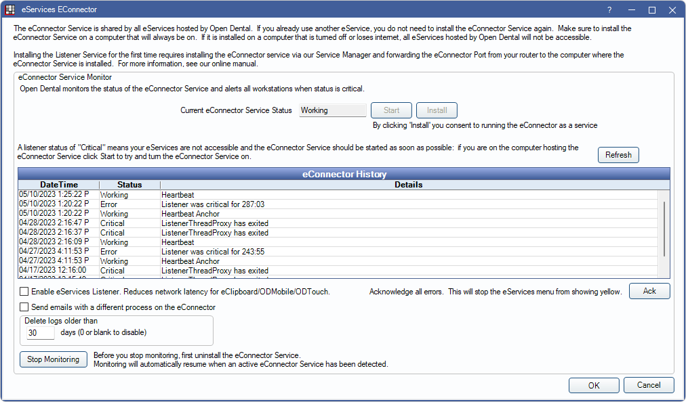
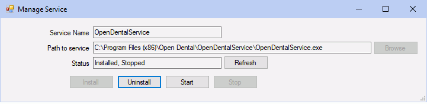
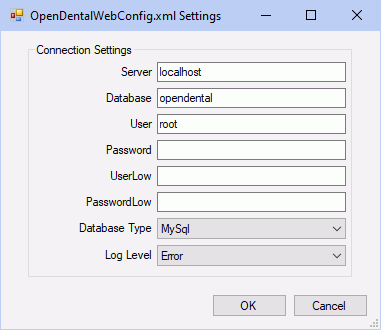

eConnector
The eConnector is used by, and required, for all eServices to facilitate communication between Open Dental's secure servers and the office.
In eServices Setup, click eConnector Service.
Use this window to determine the current status of the eConnector.
Current eConnector Service Status: Displays the current status of the eConnector service.
- Working: The eConnector is installed and running.
- None: The eConnector is not installed. Click Install to install the eConnector. See below for details.
- Stopped: Click Start to restart the eConnector.
eConnector History: Lists a status of eConnector events recording heartbeats, errors, and other status changes.
- Refresh: Click to update the eConnector status history.
- Ack: Acknowledge an error showing in the service status.
Enable eServices Listener: Check to enable the eServices Listener. Recommended for offices utilizing eClipboard, ODMobile, or ODTouch.
- When enabled, traffic between the app and server is sent over the local network. Devices must be on the same local network as the eConnector. When the networks differ, traffic is sent via Open Dental HQ instead.
- To utilize the eServices Listener, the eConnector must be allowed through the Firewall and ports 30777 - 30787 must be opened. See eConnector Firewall for instructions.
Send emails with a different process on the eConnector: This should remain unchecked unless directed by Open Dental Support. When checked, uses a separate process for email transmission. Intended for use of large offices experiencing email timeout errors.
Delete logs older than: Sets to 30 by default. Deletes eConnector logs older than the set value. Enter 0 to disable the feature and never delete old logs.
Stop Monitoring: Click to terminate monitoring after eConnector has been uninstalled.
Install the eConnector on the Server
 See our video: eConnector Installation.
See our video: eConnector Installation.
- Only install the eConnector on one machine (typically the server).
- In Miscellaneous Setup, set the eConnector machine as the Update Server Name.
- The eConnector machine should always be on and awake. If turned off, hibernating, or in sleep mode, eServices will not work until the computer wakes up.
- The eConnector is not compatible with Linux or Mac.
- Update to the most recent stable version.
- Run Open Dental as an administrator.
- In the Main Menu, click eServices, eConnector Service.
- Click Install.
- If prompted to allow the eConnector to begin listening for requests, click Yes.
- If prompted to set the computer as the Update Server, click Yes.
- When installation is complete, click OK.
If an error displays indicating a need for manual installation, see Alternate / Manual Installation below.
Automatic Installation
The eConnector is automatically installed if there has never been an eConnector heartbeat on the computer (i.e., no eConnector has ever been installed) and the database is updated to Version 22.3.48 or 22.4.20 or greater. When automatically installed, the Update Server in Miscellaneous Setup is set to the eConnector server.
Manual Installation
Sometimes the eConnector must be installed manually due to permission restrictions on the server or workstation.
- Open the Service Manager by running as administrator.

- Click Add.
 - Enter or choose the Service Name. It must begin with OpenDent (e.g., OpenDentalEConnector).
- Click Browse and select the OpenDentalEConnector.exe.
Typically it is located in \Program Files (x86)\Open Dental\OpenDentalEConnector\. - Click Install.
- Enter the configuration settings.
- Server: Name of server hosting the Open Dental database.
- Database: Name of the database (typically opendental).
- User: Name of the MySQL user (typically root).
- Password: Enter the MySQL password.
- Enter the configuration settings.
- Click OK to close the configuration settings window.
- If this installation is successful, the status changes from from Not installed to Installed, Stopped.
- Click Start to start the eConnector service. The status will change to Installed, Running.
Install the eConnector on a Workstation
Installing the eConnector on a workstation is only used when the server is not a viable option.
First follow the same steps as installing on a server, then configure the eConnector service to run using administrator credentials. This requires technical knowledge and may require an IT professional.
- Click Windows Start and open Services.
- Right-click the eConnector service, and open Properties.
- Click the Log On tab.
- Select This Account.
- Enter the administrator login credentials.
- Click OK.